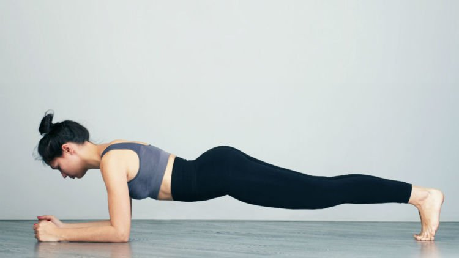
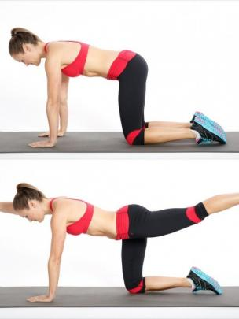
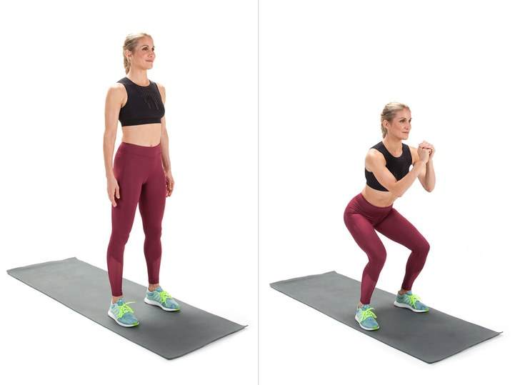
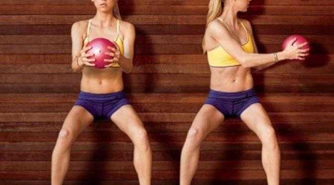
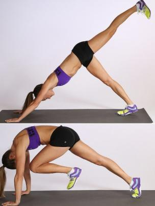

Lakukan 7 Olahraga Sederhana Ini dan Dapatkan Bentuk Tubuh Ideal
Jakarta Tahun baru akan segera tiba, saatnya Anda menjadikan olahraga sebagai resolusi untuk mendapatkan tubuh lebih sehat sekaligus ideal. Tak hanya mengkonsumsi makanan sehat saja, tapi olahraga sederhana yang dilakukan secara rutin juga bisa membantu Anda mendapatkan bentuk tubuh impian Anda.
Tak harus pergi ke pusat kebugaran, 7 olahraga sederhana ini bisa Anda lakukan sendiri di rumah. Seperti yang dilansir dari situs brightside.me, Rabu (28/12/2016) Anda bisa melakukannya secara rutin setiap 10 menit per hari selama 4 minggu.
1. Plank

Olahraga plank merupakan bentuk latihan statis dengan menahan tubuh Anda dalam posisi tengkurap. Untuk melakukan plank dengan benar Anda harus menopang tubuh dengan siku, lengan dan kaki Anda. Pastikan bagian punggung lurus sempurna dan bagian pinggang tidak turun. Lalu, lakukan gerakan naik turun secara perlahan. Olahraga ini dapat membuat otot perut, lengan, punggung dan paha lebih kencang.
2. Push Up

Untuk melakukan posisi push-up yang benar, awali dengan posisi plank dengan tangan yang menopang tubuh. Kemudian, dorong tubuh ke bawah dan ke atas. Yang paling penting dalam posisi ini adalah memastikan punggung, perut dan kaki tetap lurus. Olahraga ini untuk melatih otot lengan, perut dan paha.
3. Latihan Otot Paha dan Bokong

Awali dengan posisi menopang tubuh Anda dengan tangan dan lutut. Kemudian, lakukan dorong kaki kanan ke arah belakang dengan posisi tangan kiri ke depan. Pastikan kaki Anda tetap lurus, tidak miring ke samping atau menekuk. Lakukan juga hal yang sama secara bergantian dengan kaki kiri.
4. Latihan Otot Perut

Berbaring telentang dan regangkan kedua lengan ke atas, lalu angkat dan tekuk kedua kaki dengan bagian tangan menyentuh lutut. Kemudian, angkat salah satu kaki Anda secara perlahan dengan lengan yang diregangkan ke atas. Lakukan hal yang sama untuk kaki sebelahnya. Jangan lupa lakukan gerakan berlawanan, angkat kaki kanan dengan tangan kiri ke atas, begitu juga sebaliknya angkat kaki kiri dengan tangan kanan ke atas.
5. Squat

Jenis latihan yang satu ini bermanfaat untuk membentuk otot bokong agar terlihat lebih kencang. Buat posisi berdiri dengan kaki selebar dengan bahu. Kemudian, mulailah gerakan jongkok seperti seolah-olah ingin duduk. Anda harus memastikan punggung Anda tetap tegak dan tidak bungkuk. Jaga juga keseimbangan tubuh Anda dengan meluruskan kedua tangan ke depan.
6. Pinggang

Ambil posisi awal dengan melebarkan kaki selebar pundak, lalu tekuk lutut dengan bagian punggung bersandar pada dinding. Kemudian, pegang bola dan gerakan tubuh Anda perlahan ke kanan dan kiri hingga menyentuh dinding. Pastikan tubuh Anda tetap tegak saat melakukan gerakan ini.
7. Perut dan Bokong

Pertama, posisikan tubuh Anda dengan menopang pada kedua tangan dan kaki seperti bentuk segitiga di atas lantai. Angkat salah satu kaki Anda setinggi yang Anda bisa. Kemudian, turunkan perlahan dan tekuk lutut hingga hampir menyentuh hidung. Kembali ke posisi awal dan lakukan hal yang sama pada kaki lainnya.
Lakukan semua gerakan tersebut secara rutin selama 4 minggu dengan jadwal berikut:
Minggu ke-1 (lakukan selama 6 hari):
2 menit plank, 1 menit push-up, 1 menit perut dan paha, 1 menit latihan perut, 1 menit latihan perut dan bokong, 1 menit pinggang dan 2 menit plank kembali. Istirahat setiap 10 detik antara setiap gerakan.
Minggu ke-2 (bergantian selama 6 hari):
Set 1: 3 menit plank, 3 menit latihan perut dan 3 menit latihan otot paha dan bokong (istirahat 15 detik antara setiap gerakan)
Set 2: 3 menit latihan pinggang, 3 menit push-up dan 3 menit latihan otot perut dan bokong (istirahat 15 detik antara setiap gerakan)
Minggu ke-3: Ulangi gerakan Minggu ke-1